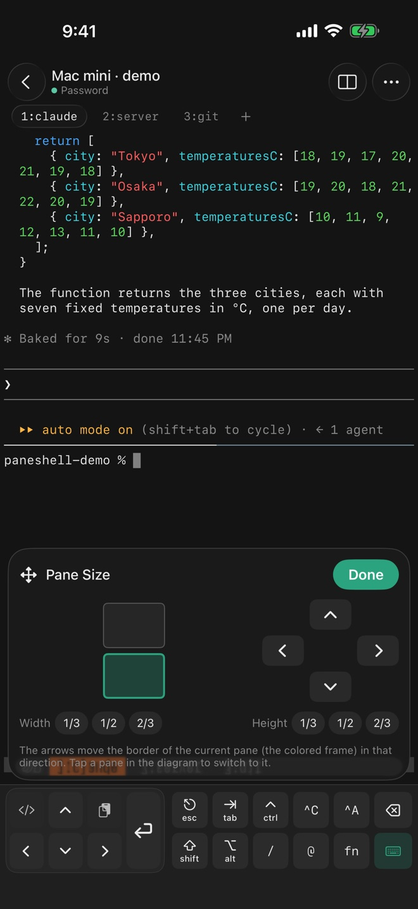
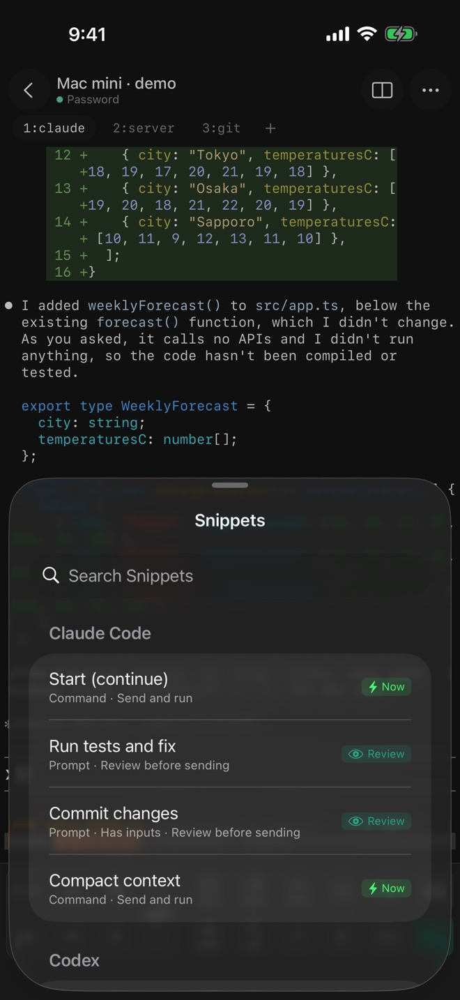
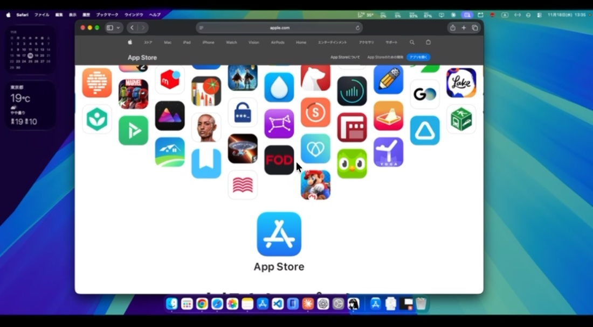
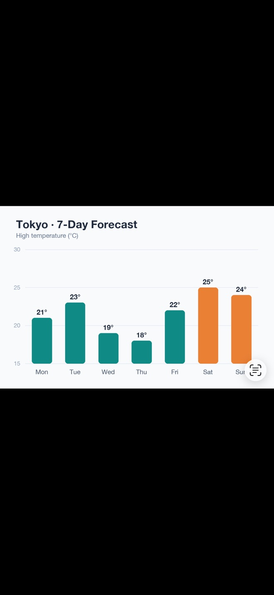
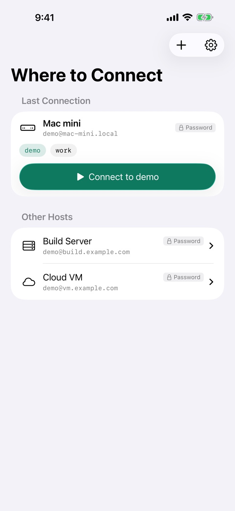

01 · tmux
Step away. Your work keeps going.
Connect to your Mac or Linux server over SSH and return to the tmux session you choose. Switch windows with tabs, and split or resize panes right from the screen. If the connection drops, reconnect to work that kept running on your host.

02 · Input
Instructions, easy from a phone.
Send Esc, Tab, Ctrl, arrows and more from the extra keys bar, or use the floating keypad over the terminal. Save frequently used prompts and commands as snippets and send them with a tap.

03 · Screen Sharing
Your Mac screen, in your hand.
Paneshell connects to built-in macOS Screen Sharing through an SSH tunnel. Tap to click, pinch to zoom, and scroll with two fingers, or switch to trackpad mode and move the pointer. Your screen never passes through a Paneshell relay server.


Send and open images
Send photos and files to your host. Open images your AI agent creates straight from paths shown in the terminal.

Saved hosts
Public key and password authentication, with Tailscale connections supported. Pick a working folder while browsing your host.
Hear when it needs you
A sound and vibration let you know when Claude Code or Codex is waiting for approval or has finished (while the app is open).
Themes
A clear default theme, plus Classic themes with Pro.
Made for iPad, too
Lay out panes side by side on the larger screen.